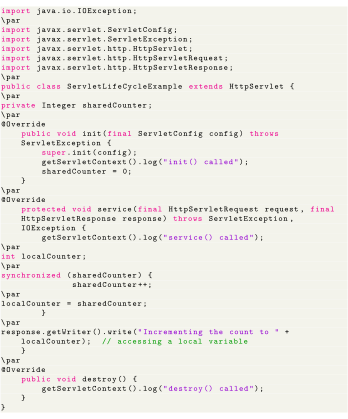

Next: JavaServer Pages Up: Servlet Previous: Servlet Contents
The following example servlet prints how many times its method was called. Note that is a subclass of , an implementation of the Servlet interface.
The method of class dispatches requests to the methods , and so on; according to the HTTP request. In the example below is overridden and does not distinguish which HTTP request method it serves.
